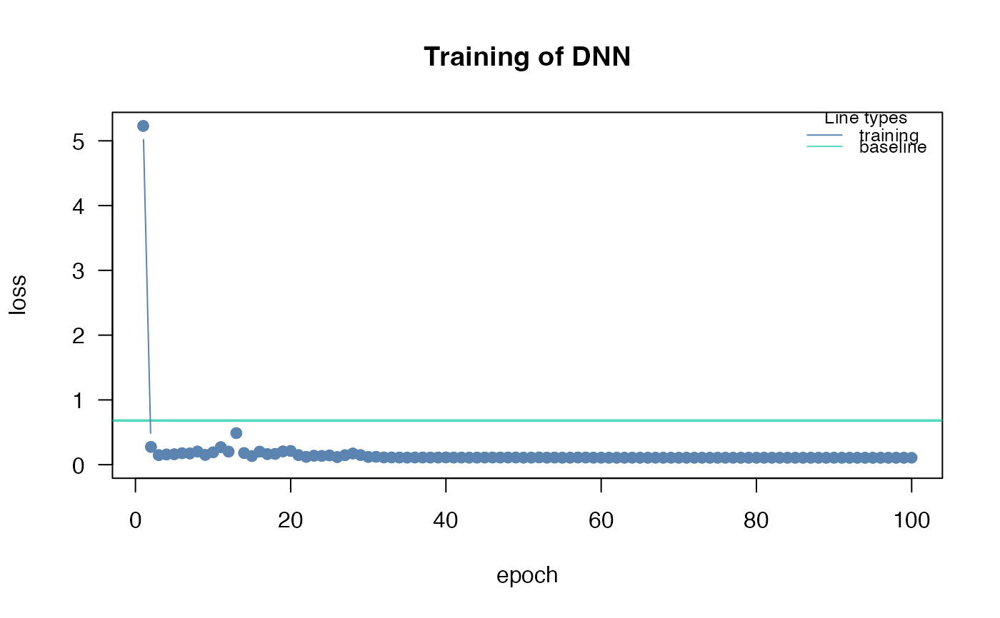

Creation of customized learning rate scheduler objects
Source:R/lr_scheduler.R
config_lr_scheduler.RdHelps create custom learning rate schedulers for dnn.
Usage
config_lr_scheduler(
type = c("lambda", "multiplicative", "reduce_on_plateau", "one_cycle", "step"),
verbose = FALSE,
...
)Arguments
- type
String defining which type of scheduler should be used. See Details.
- verbose
If TRUE, additional information about scheduler will be printed to console.
- ...
additional arguments to be passed to scheduler. See Details.
Value
object of class cito_lr_scheduler to give to dnn
Details
different learning rate scheduler need different variables, these functions will tell you which variables can be set:
lambda:
lr_lambdamultiplicative:
lr_multiplicativereduce_on_plateau:
lr_reduce_on_plateauone_cycle:
lr_one_cyclestep:
lr_step
Examples
# \donttest{
if(torch::torch_is_installed()){
library(cito)
# create learning rate scheduler object
scheduler <- config_lr_scheduler(type = "step",
step_size = 30,
gamma = 0.15,
verbose = TRUE)
# Build and train Network
nn.fit<- dnn(Sepal.Length~., data = datasets::iris, lr_scheduler = scheduler)
}
#> Learning rate Scheduler step
#> step_size: [30]
#> gamma: [0.15]
#> last_epoch: [-1]
#> Loss at epoch 1: 9.972865, lr: 0.01000

#> Loss at epoch 2: 1.624372, lr: 0.01000
#> Loss at epoch 3: 0.921590, lr: 0.01000
#> Loss at epoch 4: 0.852367, lr: 0.01000
#> Loss at epoch 5: 1.180652, lr: 0.01000
#> Loss at epoch 6: 0.199352, lr: 0.01000
#> Loss at epoch 7: 0.191057, lr: 0.01000
#> Loss at epoch 8: 0.131232, lr: 0.01000
#> Loss at epoch 9: 0.141522, lr: 0.01000
#> Loss at epoch 10: 0.117280, lr: 0.01000
#> Loss at epoch 11: 0.217390, lr: 0.01000
#> Loss at epoch 12: 0.364678, lr: 0.01000
#> Loss at epoch 13: 0.202936, lr: 0.01000
#> Loss at epoch 14: 0.158126, lr: 0.01000
#> Loss at epoch 15: 0.443487, lr: 0.01000
#> Loss at epoch 16: 0.346802, lr: 0.01000
#> Loss at epoch 17: 0.476207, lr: 0.01000
#> Loss at epoch 18: 0.195566, lr: 0.01000
#> Loss at epoch 19: 0.118461, lr: 0.01000
#> Loss at epoch 20: 0.141085, lr: 0.01000
#> Loss at epoch 21: 0.125461, lr: 0.01000
#> Loss at epoch 22: 0.171364, lr: 0.01000
#> Loss at epoch 23: 0.191800, lr: 0.01000
#> Loss at epoch 24: 0.173175, lr: 0.01000
#> Loss at epoch 25: 0.141527, lr: 0.01000
#> Loss at epoch 26: 0.292698, lr: 0.01000
#> Loss at epoch 27: 0.146220, lr: 0.01000
#> Loss at epoch 28: 0.127817, lr: 0.01000
#> Loss at epoch 29: 0.123529, lr: 0.01000
#> Loss at epoch 30: 0.313168, lr: 0.00150
#> Loss at epoch 31: 0.261483, lr: 0.00150
#> Loss at epoch 32: 0.118990, lr: 0.00150
#> Loss at epoch 33: 0.108369, lr: 0.00150
#> Loss at epoch 34: 0.111007, lr: 0.00150
#> Loss at epoch 35: 0.110114, lr: 0.00150
#> Loss at epoch 36: 0.109908, lr: 0.00150
#> Loss at epoch 37: 0.109010, lr: 0.00150
#> Loss at epoch 38: 0.108391, lr: 0.00150
#> Loss at epoch 39: 0.109661, lr: 0.00150
#> Loss at epoch 40: 0.107846, lr: 0.00150
#> Loss at epoch 41: 0.109089, lr: 0.00150
#> Loss at epoch 42: 0.110615, lr: 0.00150
#> Loss at epoch 43: 0.106184, lr: 0.00150
#> Loss at epoch 44: 0.108482, lr: 0.00150
#> Loss at epoch 45: 0.108495, lr: 0.00150
#> Loss at epoch 46: 0.107704, lr: 0.00150
#> Loss at epoch 47: 0.114423, lr: 0.00150
#> Loss at epoch 48: 0.105985, lr: 0.00150
#> Loss at epoch 49: 0.109185, lr: 0.00150
#> Loss at epoch 50: 0.110320, lr: 0.00150
#> Loss at epoch 51: 0.106613, lr: 0.00150
#> Loss at epoch 52: 0.113071, lr: 0.00150
#> Loss at epoch 53: 0.108872, lr: 0.00150
#> Loss at epoch 54: 0.105959, lr: 0.00150
#> Loss at epoch 55: 0.106669, lr: 0.00150
#> Loss at epoch 56: 0.109146, lr: 0.00150
#> Loss at epoch 57: 0.107917, lr: 0.00150
#> Loss at epoch 58: 0.108803, lr: 0.00150
#> Loss at epoch 59: 0.110618, lr: 0.00150
#> Loss at epoch 60: 0.109122, lr: 0.00022
#> Loss at epoch 61: 0.106625, lr: 0.00022
#> Loss at epoch 62: 0.107791, lr: 0.00022
#> Loss at epoch 63: 0.107766, lr: 0.00022
#> Loss at epoch 64: 0.110824, lr: 0.00022
#> Loss at epoch 65: 0.110270, lr: 0.00022
#> Loss at epoch 66: 0.105752, lr: 0.00022
#> Loss at epoch 67: 0.105972, lr: 0.00022
#> Loss at epoch 68: 0.107724, lr: 0.00022
#> Loss at epoch 69: 0.106702, lr: 0.00022
#> Loss at epoch 70: 0.105985, lr: 0.00022
#> Loss at epoch 71: 0.106760, lr: 0.00022
#> Loss at epoch 72: 0.105696, lr: 0.00022
#> Loss at epoch 73: 0.104977, lr: 0.00022
#> Loss at epoch 74: 0.107359, lr: 0.00022
#> Loss at epoch 75: 0.106305, lr: 0.00022
#> Loss at epoch 76: 0.105479, lr: 0.00022
#> Loss at epoch 77: 0.111838, lr: 0.00022
#> Loss at epoch 78: 0.110170, lr: 0.00022
#> Loss at epoch 79: 0.108368, lr: 0.00022
#> Loss at epoch 80: 0.106456, lr: 0.00022
#> Loss at epoch 81: 0.106778, lr: 0.00022
#> Loss at epoch 82: 0.108473, lr: 0.00022
#> Loss at epoch 83: 0.106656, lr: 0.00022
#> Loss at epoch 84: 0.106065, lr: 0.00022
#> Loss at epoch 85: 0.108102, lr: 0.00022
#> Loss at epoch 86: 0.107313, lr: 0.00022
#> Loss at epoch 87: 0.106470, lr: 0.00022
#> Loss at epoch 88: 0.109024, lr: 0.00022
#> Loss at epoch 89: 0.107100, lr: 0.00022
#> Loss at epoch 90: 0.108087, lr: 0.00003
#> Loss at epoch 91: 0.107669, lr: 0.00003
#> Loss at epoch 92: 0.106032, lr: 0.00003
#> Loss at epoch 93: 0.108563, lr: 0.00003
#> Loss at epoch 94: 0.107123, lr: 0.00003
#> Loss at epoch 95: 0.107010, lr: 0.00003
#> Loss at epoch 96: 0.105981, lr: 0.00003
#> Loss at epoch 97: 0.106437, lr: 0.00003
#> Loss at epoch 98: 0.106987, lr: 0.00003
#> Loss at epoch 99: 0.107757, lr: 0.00003
#> Loss at epoch 100: 0.108197, lr: 0.00003
# }